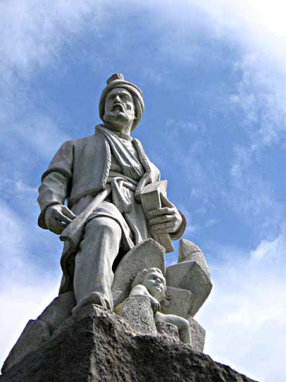
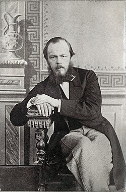
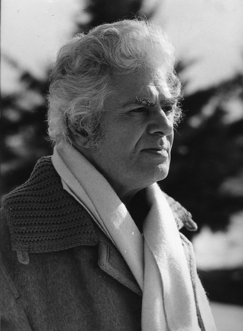
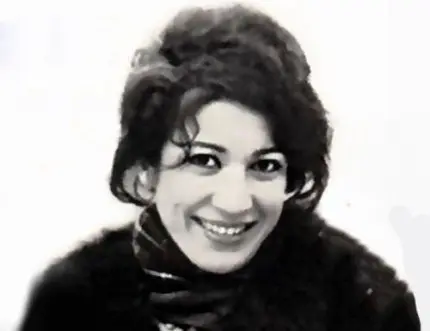
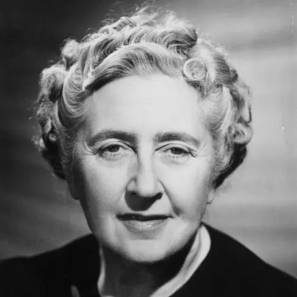
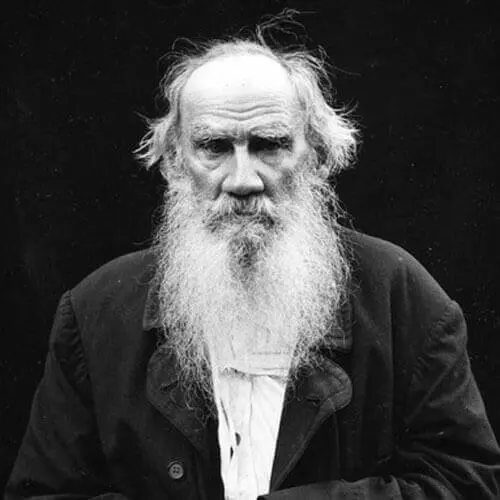
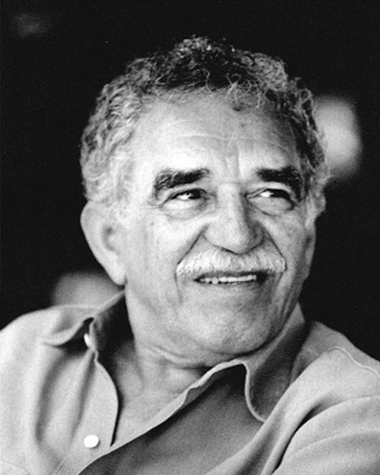

صادق هدایت
۱۲۸۱ – ۱۳۳۰
صادق هدایت نویسنده، مترجم و روشنفکر ایرانی بود. او را پدر داستاننویسی مدرن ایران میدانند. آثار او به دلیل عمق روانشناختی و نگاه تلخ به زندگی شهرت دارند.
📚 آثار صادق هدایت

بوف کور
۱۳۱۵

صورتک ها
۱۳۲۱

زنده به گور
۱۳۰۹

سه قطره خون
۱۳۱۱

سگ ولگرد
۱۳۲۱

علویه خانم
۱۳۱۱

فردوسی
۳۲۹ – ۴۱۶ هجری
ابوالقاسم فردوسی، حماسهسرای بزرگ ایرانی و سرایندهی شاهنامه است. او با سرودن شاهنامه، زبان فارسی را زنده نگه داشت و هویت ملی ایران را در برابر تهاجمات بیگانه حفظ کرد.
ورود به صفحه اختصاصی فردوسی
فئودور داستایوفسکی
۱۸۲۱ – ۱۸۸۱
داستایوفسکی نویسندهی بزرگ روسی و یکی از تأثیرگذارترین روانکاوان ادبیات جهان است. رمانهای او مانند «جنایت و مکافات» و «برادران کارامازوف» به ژرفای وجود انسان میپردازند.
ورود به صفحه اختصاصی داستایوفسکی
احمد شاملو
۱۳۰۴ – ۱۳۷۹
احمد شاملو، شاعر بزرگ معاصر ایران و بنیانگذار شعر سپید فارسی است. او با نگاهی تازه به زبان و اسطوره، تأثیری عمیق بر ادبیات مدرن ایران گذاشت.
ورود به صفحه اختصاصی احمد شاملو
فروغ فرخزاد
۱۳۱۳ – ۱۳۴۵
فروغ فرخزاد، شاعر نوپرداز ایرانی، با اشعار احساسی و زنانهی خود، جایگاهی ویژه در ادبیات معاصر دارد. مجموعهی «تولدی دیگر» از شاهکارهای اوست.
ورود به صفحه اختصاصی فروغ فرخزاددارن هاردی
۱۹۷۱ – اکنون
دارن هاردی، نویسنده و سخنران انگیزشی آمریکایی است. کتاب پرفروش او «اثر مرکب» به میلیونها نفر در سراسر جهان کمک کرده تا با تغییرات کوچک و مداوم، به نتایج بزرگ دست یابند.
ورود به صفحه اختصاصی دارن هاردی
آگاتا کریستی
۱۸۹۰ – ۱۹۷۶
آگاتا کریستی، ملکهی داستانهای معمایی، با خلق شخصیتهای ماندگاری مانند هرکول پوآرو و خانم مارپل، به یکی از پرفروشترین نویسندگان تاریخ تبدیل شد. «قتل در قطار سریعالسیر شرق» و «ده کوچولوی سیاه» از شاهکارهای او هستند.
ورود به صفحه اختصاصی آگاتا کریستی
لئو تولستوی
۱۸۲۸ – ۱۹۱۰
تولستوی، رماننویس بزرگ روسی، با آثاری مانند «جنگ و صلح» و «آنا کارنینا» به عنوان یکی از برترین نویسندگان تاریخ ادبیات شناخته میشود. او به ژرفای روان انسان و مسائل اخلاقی پرداخت.
ورود به صفحه اختصاصی لئو تولستوی
فرانتس کافکا
۱۸۸۳ – ۱۹۲۴
کافکا، نویسندهی چکتبار آلمانیزبان، با داستانهای کابوسوار و نمادین خود، تأثیری شگرف بر ادبیات مدرن گذاشت. «مسخ» و «محاکمه» از معروفترین آثار او هستند.
ورود به صفحه اختصاصی فرانتس کافکا
گابریل گارسیا مارکز
۱۹۲۷ – ۲۰۱۴
مارکز، نویسندهی کلمبیایی و برندهی نوبل ادبیات، پیشرو رئالیسم جادویی است. «صد سال تنهایی» و «عشق در زمان وبا» از شاهکارهای بینظیر او هستند.
ورود به صفحه اختصاصی گابریل گارسیا مارکز📚 کتابهای خواندنی
گزیدهای از بهترین کتابهای ادبیات فارسی

تولدی دیگر
فروغ فرخزاد - ۱۳۴۲

هوای تازه
احمد شاملو - ۱۳۳۶

افسانه
نیما یوشیج - ۱۳۰۱

ستاره
سیمین بهبهانی - ۱۳۴۱

چشمهایش
بزرگ علوی - ۱۳۳۱